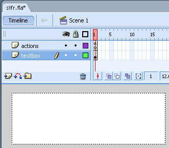
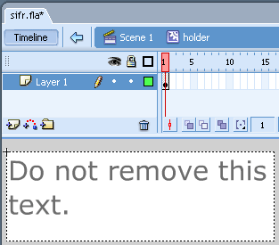
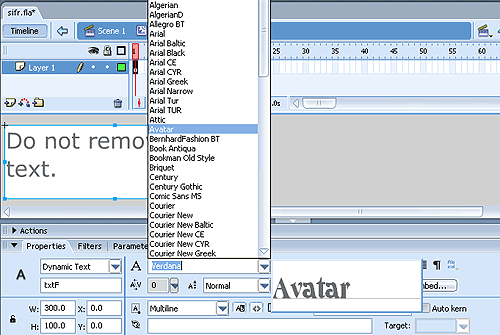
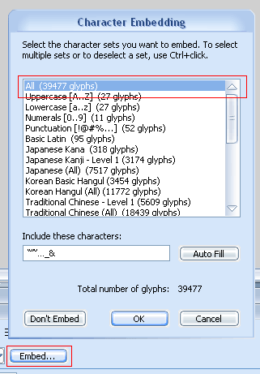

Xhtml ile kodlama yaparken genelde metinleri kullanırız. Çünkü metinlerin eklemesi, düzenlemesi kolaydır ve arama motorları indekslemesini kolay yapar. Ancak bazı durumlarda metin yerine resim kullanmak sitemizin görselliği açısından önemlidir metinler CSS ile bir yere kadar şekillendirilir, bir çok metin şekillendirme yöntemini CSS ile yapamayız. Bazı durumlarda metin yerine resim kullanmak durumunda kalırız.
Web standartlarına göre kodlama yaparken metin yerine resim kullanıldığı durumlarda arama motorlarının rahat indekslemesi ve CSS'i ve resimleri desteklemeyen tarayıcılarda görüntünün ve erişebilirliğin bozulmaması için Metin Yerine Resim Ekleme Teknikleri(Image replacement) kullanılır.
Metin yerine resim eklemek için bir çok teknik geliştirildi ve geliştirilmektedir, bazıları CSS ve resimlerin desteklenmediği tarayıcılarda sorun çıkardığı için web kodlamacısı tarafında kullanımı terkedildi. Biz burada belli başlı 4 metin yerine resim ekleme tekniğini anlatacağız ve avantaj, dezavantajlarını sizlerle paylaşacağız.
1- Fahrner'in Metin Yerine Resim koyma tekniği (Fahrner Image Replacement - FIR)
Todd Fahrner arkadaşımızın ürettiği bu kod en popüler metotlardan biridir. Uygulanması en basit metot olması kullanımını arttırmıştır. Teknik çok basittir yerine resim konacak metin \<span> etiketi içine alınır. Xhtml kodu:
[sourcecode language="html"] \<h1> \<span>Selam\</span> \</h1> [/sourcecode]
Metin yerine görünecek resim \<h1> etiketine uygulanır: CSS kodu
[sourcecode language="css"] h1 { background:url(selam.gif) no-repeat; width: 62px; height: 19px; font-size:16px; } [/sourcecode]
ve son olarakta \<span> etiketi içindeki metni gizlemek için:
[sourcecode language="css"] span { display: none; } [/sourcecode]
Örneği görmek için tıklayınız.
Bu yöntem bir çok yönden avantajlıdır ancak son yazdığımız kod biraz problemlidir, Bir çok ekran okuyucu bu kodda sorun çıkaracaktır. Erişilebilirlik açısından eksik bir kodlama tekniğidir. Bu eksikliği gidermek için başka yöntemler geliştirilmiştir.
2- "Phark" Metin Yerine Koyma Tekniği
www.phark.net'in ürettiği bu teknik ekran okuyucuları tarafından görüntülenecektir, bu yönüyle FIR tekniğinden avantajlıdır. Ayrıca fazladan \<span> etiketi üretmemesi yönüylede avantajlıdır. Html kodu:
[sourcecode language="css"] \<h1>Selam\</h1> [/sourcecode]
FIR tekniğinden farklı olarak bu teknikte text-indent değeri yüksek eksi değer(genelde -999px) verilerek ekranı dışına atılarak üretilir. CSS kodu:
[sourcecode language="css"] h1 { text-indent: -999px; background:url(selam.gif) no-repeat; width: 62px; height:19px; } [/sourcecode]
Örneği görmek için tıklayınız.
Bu teknik ekran okuyucularda sorunsuz çalışacaktır ancak resim görüntülemeyi iptal eden kullanıcılar bu metot ile kodladığımız sayfalarda sorun yaşayacaktır. Biz bu tekniği CSS ile Menü Oluşturmak V - Resimli Menüler makalemizde uygulamıştık.
3- Gilder/Levin Metin Yerine Koyma Tekniği
Tom Gilder ve Levin Alexander bu kodlamayı geliştirmiştir. Ekran okuyucularında ve resim görüntülemeyi iptal eden kullanıcılarda sorunsuz çalışır. Bu teknikte boş bir \<span> etiketi ile yazının üzeri kapatılır, eğer resimleri kapatıp sitenizi ziyaret eden olursa altındaki metni görür.
Bu metot için fazladan \<span> etiketi üretilir. Html kodu:
[sourcecode language="html"] \<h1> \<span>\</span>Selam \</h1> [/sourcecode]
\<h1> etiketinin boyutları resmin boyutları ile aynı atanır ve göreceli olarak konumlandırılır. CSS kodu
[sourcecode language="css"] h1 { width: 62px; height: 19px; position: relative; font-size:16px; } [/sourcecode]
Ekstradan üretilen \<span> etiketi mutlak konumlandırma ile konumlandırarak metnin üzerini kapatırız. Ayrıca boyutları %100 verilerek tam kapanma sağlanır. Son olarakta görünecek resim zemin resmi olarak atanır.
[sourcecode language="css"] h1 span { background: url(selam.gif) no-repeat; position: absolute; width: 100%; height: 100%; } [/sourcecode]
Örneği görmek için tıklayınız.
Bu metot hem ekran okuyucuları hemde resim göstermeyen tarayıcılarda sorunsuz çalışır. Tek dezavantajı fazladan bir \<span> etiketi eklenmesidir.
Bunların dışında Radu, Leahy/Langridge, Dwyer, Lindsay ve Shea Enhancement Teknikleride mevcuttur. Ayrıca hala bir çok teknik çıkarılmaktadır.
4- Inman Metin Yerine Flash ekleme Tekniği (Inman Flash Replacement (IFR)) ve Boyutlandırılabilir Inman Metin Yerine Flash ekleme Tekniği (Scalable Inman Flash Replacement (sIFR))
Metin yerine resim ekleme tekniklerinin amaçlarında bir taneside herkesin bilgisayarında olmayan fontları kullanmaktır. Mike Davidson ve
Shaun Inman daha yaratıcı bir teknik geliştirdiler. Metin Yerine Flash ekleme Tekniği ve Boyutlandırılabilir Metin Yerine Flash ekleme Tekniği.
Flash swf dosyalarına font gömmeye izin veriyor, metin yerine resim koymak yerine metin yerine niye flash dosyası koymayalım diye düşünen bu arkadaşlar bize gerçekten çok farklı bir tekniği öğrettiler, yani sFIR'ı. Bu yöntemde javascript, doküman içinde belirli bir metini veya belirlenmiş sınıf ismini bir döngü ile bulup yerine flash elementini koyuyor. Javascript metin yerine küçük flash dosyalarını koyuyor. Bu teknik ile sadece belirtilen yerler flash dosyası ile değiştirilir tüm sayfa değiştirilmez. Bu tekniğin bir diğer avantajı flash dokümanları seçilebilirdir yani eklediğimiz metni kopyalanıp yapıştırma imkanımız var demektir. Bu metot ile metinler tekrar boyutlandırılabilir.
Bu tekniği kolayca uygulamamız için Mike Davidson bu metod için gereken dosyaları içeren bir paket hazırlamıştır. Bu metodu uygulamak için ilk olarak buradan bu paketi indirmek gerekiyor. İndirdiğimiz paketin içinde;
- dokümantasyon
- css
- demo
- flash
- js
dokümanları var.
sIFR Nasıl Uygulanır
Bu teknik devamlı kendini geliştirmektedir, biz burada sIFR2.0.2 versiyonu üzerinden anlatacağız.
Flash
İlk olarak indirdiğimiz sIFR-2.0.2.zip doyasını açacağız ve flash do kümanı sifr.fla açacağız.

Dokümanı açtığımızda Scene1'deki gördüğümüz beyaz alana(holder Movie cilp'i) çift tıklayalım. Karşımıza yazılı olan metine dokunmamamızı isteyen bir dinamik metin alanı çıkacak(Do not remove this text.), dokunmasak iyi olur :D

Bu dinamik metin alanı fare ile seçip alttaki Properties penceresinden istediğimiz fontumuzu(Eğer fontu gömeceksek(embed) Türkçe karakter içeren fontları seçmemiz iyi olacak.) seçiyoruz.

Eğer fontu gömeceksek, Properites ekranından Embed... butonuna tıklıyoruz. Açılan pencereden All seçip ok tıklayıp bu pencereyi kapatıyoruz. Böylelikle kullandığımız fontu flash dokümanı içine gömmüş olduk, yani kullanıcının bilgisayarında bu font olmasa bile fontu görecektir.

Sonra flash dokümanımızı kaydedelim. Flash dosyası Flash 2004 ile üretildiği için eğer Flash 2004 sonraki versiyonları kullanıyorsak bize yükseltme yapıp yapmayacağımızı soracak bizde Save deyip yükseltme yapalım.
Son olacak Flash dosyamızı yayınlayalım(publish..). Şimdi elimizde kendi oluşturduğumuz bir sifr.swf dokümanı var. İsmini değiştirebiliriz, ben fatih.swf yaptım.
HTML
Html dokümanınız açıp \<head> içine aşağıdaki kodları eklememiz gerekiyor.
[sourcecode language="html"] \<link rel="stylesheet" href="sIFR-screen.css" type="text/css" media="screen"> \<link rel="stylesheet" href="sIFR-print.css" type="text/css" media="print"> [/sourcecode]
sonra bunların altına javascript dosyalarını ekleyelim.
[sourcecode language="html"] \<script src="sifr.js" type="text/javascript">\</script>\</li> \<script src="sifr-addons.js" type="text/javascript">\</script> \</li> [/sourcecode]
Sonra Html içeriğinin sonuna aşağıdaki kodu ekleyelim.
[sourcecode language="javascript"] \<script type="text/javascript"> //\<![CDATA[ /* Replacement calls. Please see documentation for more information. */ if(typeof sIFR == "function"){ // This is the older, ordered syntax sIFR.replaceElement("h2", "fatih.swf", "#000000", "#000000", "#FFFFFF", "#FFFFFF", 0, 0, 0, 0); }; //]]> \</script> \</body> \</html> [/sourcecode]
Bu javascript kodunda metin yerine eklenecek swf fosyasını, metnin rengini, hangi elemente(etiket, id ve sınıf) uygulanacağını, padding, link rengi gibi bir çok özelliği buradan düzenleyebiliyoruz. İndirdiğimiz dökümandaki örnek html(index.html) ve dokümantasyonu inceleyerek bu konuda daha ayrıntılı bilgi edinebilirsiniz.
CSS
sIFR-screen.css dokümanın açıyoruz.
[sourcecode language="css"] .sIFR-hasFlash h2 { visibility: hidden; letter-spacing: -7px; font-size: 36px; margin:0; padding:0; } [/sourcecode]
Burada ekleyeceğimiz fontun ayarlarını yapıyoruz. font boyutunu kendi seçtiğimiz fonta göre ayarlıyoruz. Örnek dosya üzerinden gidersek bu css dokümanında bir çok başlık tanımı mevcuttur biz burada sadece kendi kullandığımızı bırakıp diğerlerini silebiliriz.
Örneği görmek için tıklayınız.
Bu tekniğin dezavantajı sayfa yüklenmeden önce javascript'in yüklenmesidir. Bu sitemizin açılış hızına etki edecektir.
Not(01.05.2008 eklendi): Bazen sFIR uyguladığımız metin ikinci satıra inmiyor bunun için başlığa bir genişlik tanımlamamız gerekiyor.
[sourcecode language="css"] h1{width:250px} [/sourcecode]
sIFR3'ün betası var ancak kararlı sürümü çıkmadı.
Sonuç olarak şunu söyleyebiliriz ki; Metin yerine resim eklemek için bir çok teknik geliştirildi ve geliştirilmektedir kodlama yaparken hangisinin bizim için daha kullanışlı olduğunu seçerek uygulamalıyız. Metin yerine resim ekleme yöntemlerini sayfamızda çok fazla yerde kullanmak pek mantıklı gelmiyor bana ama gerektiği yerde, örneğin sadece başlıklar için kullanmak gayet mantıklı. Takdir ve seçim sizin.
Kaynaklar
- [http://www.altiustutasarim.com/arsiv/2005/03/css_fir_teknigi.php][Mehmet Doğan]
- http://www.ampsoft.net/webdesign-l/image-button.html
- http://www.mezzoblue.com/tests/revised-image-replacement/
- [http://www.digital-web.com/articles/in_defense_of_fahrner_image_replacement/][]
- http://alistapart.com/articles/fir/
- http://www.mikeindustries.com/sifr/
- [http://webdesign.maratz.com/lab/multi_color_sifr/][]
- http://usabletype.com/weblog/how-and-when-to-use-sifr/
- [http://www.adobe.com/devnet/dreamweaver/articles/sifr_demo.html][Introduction to Scalable Inman Flash Replacement (sIFR)]
- http://novemberborn.net/sifr3/beta1
- http://labs.tom-lee.com/HeadingReplacement/Alpha/
http://www.digital-web.com/articles/in_defense_of_fahrner_image_replacement/
Comments !